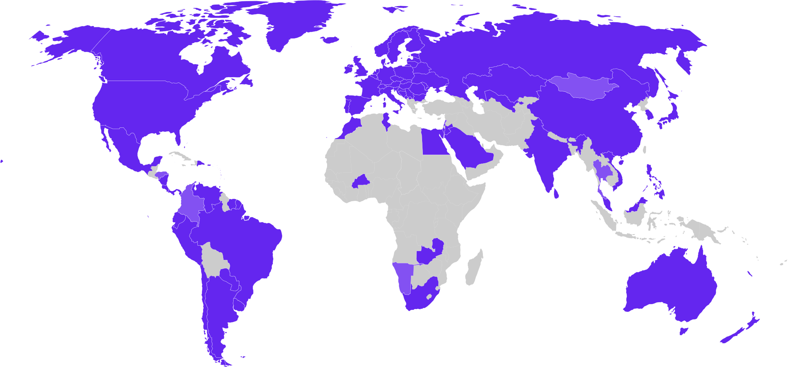
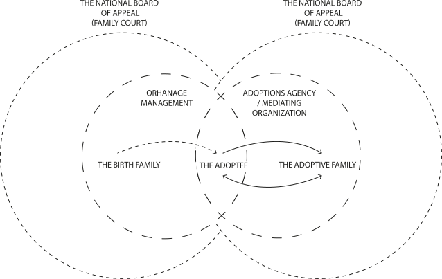
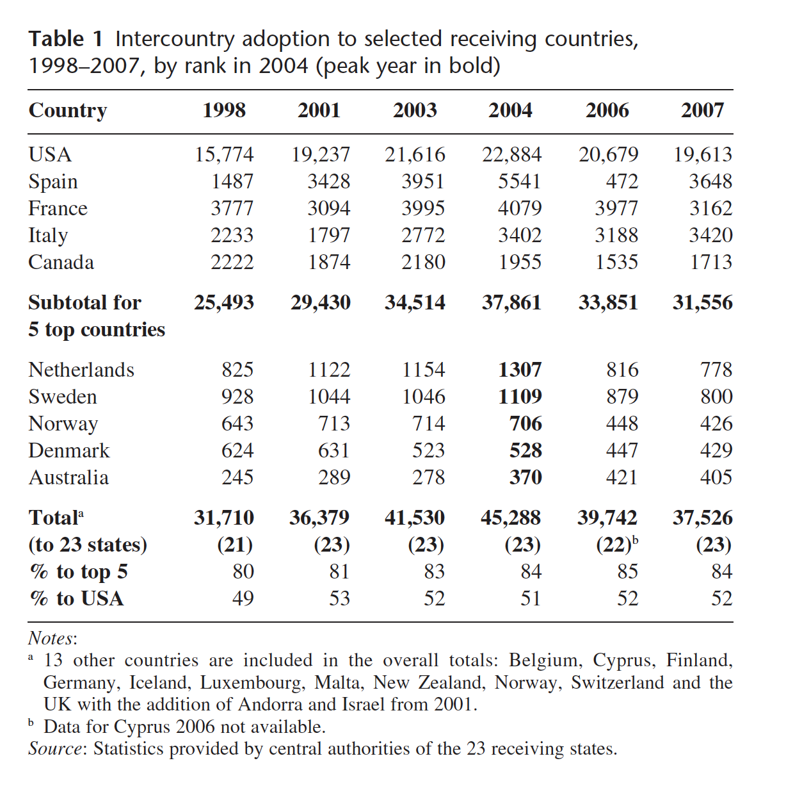
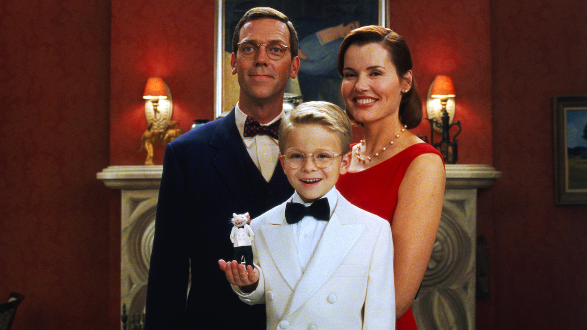

Mother
Melodi: Solen er så rød mor
…
Solen er så r ød, mor
og skoven bli'r så sort
Nu er solen d ød, mor
og dagen gået bort.
Ræven går derude, mor
vi låser vores gang.
Kom, sæt dig ved min pude, mor
og syng en lille sang.
Himlen er så stor, mor
med klare stjerner på
Hvem monstro der bor, mor
på stjernen i det blå ?
Tror du der er drenge, mor
der kigger ned på mig ?
Og tror du de har senge, mor
og sover li'som jeg?
…
Melody: The sun is so red mother
…
The sun is so red mother
And the forest becomes so black
Now the sun dies mother
And the day is over
The fox goes by outside mother,
we lock our entrance
Come, sit by my pillow, mother
And sing a little song
The sky is so big mother
With clear stars upon
I wonder who lives, mother
On the star in the blue
Do you believe there are boys mother
who look down to me?
And do you think they have beds mother
And sleep just like Me
…
Abstract
This paper explores transracial, intercountry adoption through a critical analysis of the gap that exists between the perception of adoption and reality. In doing so, governmental- and sociocultural aspect are inspected. Transnational adoption is complex, so I conducted a conversation with the lead chairman of the Danish international adoption agency, Lars Ellegaard Jørgensen. His statements and knowledge along with my own curiosity and personal story form the basis of this paper, combined with an investigation of the wider context of adoption and the hidden narratives by the global power structures and personal tragedies, balancing facts and fictions.
This thesis is aimed at answering the following research question: How does the perception of adoption fueled by governmental and sociocultural aspects, relate to real practical life? In order to offer a critical analysis on the state of adoption, this paper starts with an overview of an adoption terminology, followed by an explanation of the adoption process and its history. The main body of the thesis will explore the governmental and sociocultural aspects which will be followed by a critical conclusion that will offer some final clarity on the research findings.
Be aware that this paper is not made to save the system nor a child.
Introduction
“Don’t ruin the Dream”, “The hero trap”, “The fake diversity”, “White savory”, “Personal branding”, “Twist and turn”, “Perception”, “Bliss”, “Delusional”, “Deprivation”, ”Gap”, “Celebrity adoption”, “Governmental regulation”, “Adoption boom”. These are just some of the keywords and quotes I have been collecting since the start of this paper. As such, allow me to introduce this paper: The Bliss of Adoption – An Ultimate Fairytale. You may know someone who has been adopted or you may have watched a movie portraying an orphan’s story. The perception of adoption in many people’s ears sounds like the right thing to do, a heart-warming story. So please, don’t ruin the dream. Yet, this is something I will most likely do with this paper. I will question the perception of adoption as Western society perceives it.
“This is a good gesture. Children who need parents and parents who need children” (Katrine W. Kjaer, Director of “Mercy Mercy”). This was Katrine’s immediate thought on adoption. You may want to adopt a child because you cannot give birth yourself, or you want to give the possibility of a “good life” to an orphan child. Before entering deeper into these arguments, I must first mention that I was myself an adopted child from China, raised by my beloved mother as a single parent. She adopted me and my non-biological sister in 1997 and 2002. But, in this paper, I will not be talking about my own story, though I will not be 100% neutral on this subject simply because of who I am. I can relate to this subject and will presumably be disappointed several times by my findings, but hopefully in the end my faith in the adoption system will still remain.
In the first instance, adoption of course has a noble intention. But in the second instance, however, there’s always a bigger story, often a tragedy, behind every adoption. It is exactly this second aspect that I want to focus this paper on. How do the official restrictions been facilitated in adoption, and how is adoption promoted? What is its impact on today’s society, and vice versa? Should we question the perception of adoption more than we are doing today? For this reason, this thesis formally explores the following research question: How does the perception on adoption fueled by governmental and sociocultural aspect, relate to real practical life?
This question will be examined by zooming in more closely at the formal adoption process. I will do so by looking at commonly used terminology of adoption and its history, as well as governmental aspects, both from the side of the receiving country as well as the country of origin. Furthermore, I will look at the sociocultural aspects of adoption, mostly by focusing on narratives and portrayal of this phenomenon in the media. Hereby, I will zoom in on four different media objects and cases; I will discuss two fictional film examples, Stuart Little and The Prince of Egypt, and I will zoom in on two real-life cases, the documentary Mercy Mercy, exposing a tragic adoption story, and the story of celebrity Madonna in adopting her Malawian son, David. By analyzing images, films, and interviews, what comes to light is that adoption is largely being glorified and romanticized in popular culture, with too little alignment with the practical lives of the people involved, and with the harsh reality of the adoption industry.
Adoption Overview
Adoption terminology, History of adoption
ADOPTION TERMINOLOGY
The term adoption refers to the act of legally taking a child to take care of them as your own, as described by Cambridge Dictionary 1.Adoption can be understood as a personal act, a legal process, or a social
service. As
a personal act2, it contains three triad members: the birth parents, the adoptee, and the adoption parents. The birth parents do not necessarily connect with the adoption family. In ‘The Psychology of Adoption’, David
Brodzinsky further
defines “…this act lifelong process rather than a single action”. As a legal process adoption is seen as “the method provided by law to establish the legal relationship of parent and child between persons who are not so
related by
birth, with the same mutual right and obligations that exist between children and their birth parents.”3 Lastly, adoption as a social service represents the legal link between the human perspective and the law.
It entails addressing the steps
from legally freeing the children to be adopted, to selecting and preparing families for adoption, preparing and placing children in adoptive families, and providing postplacement- and post-adoptive services. In this paper, I will focus
on
adoption as a personal act.
Adoption is a large field with multiple types. The terminology differentiates between domestic adoption, public adoptions, private domestic adoptions, transracial adoption, and intercountry adoption. For clarification of these terms, see the table below. To narrow the field down further, this paper focuses on transracial, intercountry adoption. Transracial intercountry adoptions are the most complex types as they contain many extra layers including race and cultural differences, which significantly impact the pre- and post-adoption processes. As the Danish anthropologist and mother of two children from the Republic of Niger, Monica Lorenzo Pugholm, states:“Transracial adoption incorporates culture meeting in so many levels”.4 The fundamental characteristic of intercountry adoption is that the adoptee is from another country than the receiving country. It can easily be confused with transracial adoptions which are adoptions of different races or ethnicities but can happen within the same country.
ADOPTION TERMINOLOGY |
|
|---|---|
| TERMINOLOGY | DEFINITIONS |
| Domestic adoptions | Adoption within a country |
| Public adoptions | Foster care adoption. It’s identified by its control by the child welfare system. In this case the children cannot return to their birth families for reasons of safety or other reasons. These reasons can include child abuse, drug/alcohol related issues, financial issues or a third party having reported the biological parents.1 |
| Intercountry adoptions | 3This is adoption from other countries that have the same race as the adoptive family. This kind of adoption goes through private adoption agencies. |
| Transracial adoption (TRA) | Is the kind of adoption that can both be domestic or international, but the children come from a different race or ethnicity than their adoptive parents. Most transracial adoptions contain children that are “foundlings”. A foundling is a term applied to children who have been abandoned by their parents and discovered by others, typically without any trace of their parents. In other words, transracial adoption is the joining of racially different parents and children together in adoptive families:“The majority of TRAs consist of BIPOC children adopted by white parents.”5 Transracial Adoption is also known as interracial or TRA. |
Adoption is a very complex and long process, involving multiple stakeholders, which can be summarized into three essential groups: the birth parents, the adoptee and the adoption parents. This adoption triad is visualized in FIG 2 as a black triangle encompassed by a red heart, which represents the adoption journey. The methods of adoption differ depending on the policies of the receiving country, leading to a variety of adoption scenarios.
Still, there is an ambiguity that accompanies adoption but that is not addressed in this symbol. However, do not get fooled by the adoption symbol, just because it contains a perfectly shaped red heart. I had the pleasure of speaking with Lars Ellegaard J ørgensen, lead chairman of the Danish International adoption agency, to gain some expert insights on this topic. Ellegaard and his wife, have adopted three siblings from Columbia in 1985. Ellegaard points out “Let's make it clear that adoption is a reaction to a tragedy. A tragedy that contains so much painful thought and decision making.” Up until this point, my research only showed adoption from the moment that the process of adopting had already begun. But from my conversation with Ellegaard I understood, that I needed to look one step before, to investigate the reasons for adoption. Why does adoption happen and how did it begin?
HISTORY OF ADOPTION
To understand the current developments of adoption and its causes, let us first clarify the historical aspects. Transracial intercountry adoption is a worldwide affair, and the world is constantly evolving. Adoption in general terms has been a well-known practice for centuries. It has been shaped over time by social trends and inventions to become how we know it today. Up until the early 1800s, adoption was a more political affair amongst wealthy and politically influential families.6Adoption has been associated with humanitarianism, upward mobility, and infertility since the Middle Ages when inheritance had to be by blood, by biology. Later on, it became a practical sphere of the Church with the intention of serving God and God's rules and mission. At that time, adoption took place via orphanages, where poor families would give up their child in exchange for different types of compensation.7 Intercountry and transracial adoption first emerged as a reaction to the tragedies of the World wars and the Korean war. This form of adoption can be traced back to 1955, when couples from the US wanted to adopt “war orphans” – the children of foreign soldiers and native women. The children were stigmatized and abandoned due to presumptions of infidelity or illegitimacy, and so given up for adoption.8 This became even more common when China opened the orphanages to Western countries. Important to mention, is that adoptions touched only a very small minority of children. By making this statement, it demonstrated how Western society is built up and works. When someone no longer “wants” something and is maybe in need of something else, then other people are prepared to step in and take over. Just like any other exchange, to say it very brutally.
Today, the majority of adoptions are by natal relatives and stepparents. With that being said, there are over five million Americans adoptees while Americans alone receive 50% of all intercountry adoption-children.9 While
this paper will investigate globally, it will present numbers and strategist mainly from the US and Denmark. Denmark is a convenient case study since it is the country where I got adopted to from China but also as it is part of the
top
ten receiving countries globally.10
1 Cambridge Dictionary. (2021b, January 6).adoption definition:Cambridge.Org.https://dictionary.cambridge.org/dictionary/english/adoption
2 The Practice of Adoption: History, Trends, and Social Context. (2003,November). researchgate.net. https://doi.org/10.1177/0011000003258061, Page 3
3 Child Welfare League of America, Standards for Adoption Services, Revised Edition, page 11.
4 Kultur, værdier og adoption. (2017, January). Adoption & samfund, page 31
5 Silverman, A. R. (1993). Outcomes of Transracial Adoption. The Future of Children, 3(1), 104. https://doi.org/10.230/105
FIG 1 Adoption Thermology table, Linea Lan Cai Fabricius, 2020
FIG 2 Adoption symbol
6 Examples are the Roman emperors Caligula, Octavian, Marcus Aurelius and Nero.
7 Adoption History:Timeline of Adoption History.(n.d.). The Adoption History Project. Retrieved January 12, 2021, from https://pages.uoregon.edu/adoption/timeline.html
Governmental aspects
Receiving countries, Origin countries
Intercountry adoption is a significant component of international migration, 11 making it of importance both to national governments and international governments worldwide. The government is involved in how this transforms society and in portraying adoption through the agency and mediating organization. Agencies and mediating organizations are doing the practical work and counsel the government on how they should make the adoption laws and restrictions. To get an idea on the scale and complexity of this “market”, it’s very important to have knowledge about how power structures are collaborating across the borders. Over 45.000 children12 have been part of the intercountry adoption since after World War 1 and 2. Hereby many adoptions have been legally controlled, however, intercountry adoption has several concerning issues such as child-trafficking and the role of class and race. As a way to prevent these things from happening, the The Hague Convention was initiated in 1993. Over 170 countries practiced adoption, where 30 countries practiced intercountry adoption.13 In FIG 3 is a world map chart of the members of the convention and the admitted countries. Out of 170 countries, 85 countries are members of The Hague Convention (Figure 2) to safeguard the interests of all stakeholders in the adoption triad, especially children, to protect them against child-trafficking. A country and continent as the United States of America stands for 50% of all intercountry adoption and they signed the convention in 1994. However, they only implemented the convention in 2008. This is rather questionable. Considering the fact that they contain 50% of the intercountry adoption, they should have been a role model for the rest of the world. Nevertheless, The Hague Convention offers only an opportunity for better cooperation between nations and the possibility of more systematic processes to serve children effectively. As Associate Professor Van Wichelen state: “The Convention does have an important role to play in ensuring the protection of the child and combating illegal and unethical adoptions”. The problem primarily rests in its implementation. As mentioned before, it went 15 years before as United states of America made the implementation.
Besides the fact that there are no uniform EU rules on adoption, there are some general principles among the counties. It is in my concern that countries cooperate more together, to make sure that the adoption system does not get abused, and to have the same understanding of “child welfare first”.

Members of the HCCH - Purple: Members - Light purple: Admitted Countries – Grey: not a member
RECEIVING COUNTRIES
STRUCTURE OF THE ADOPTION PROCESS
See this family! What a big white smile on the woman's face, with her
perfectly styled hair. She is wearing a dusty pink turtleneck. In her arms you see a toddler with black hair and a facial expression that would make most people smirk and scream out ”So cute!” She is wearing a white dress, with her
right hand lying softly in the woman's right hand. It seems that the woman with the big smile and the little girl with the black hair are looking in the same direction. Next to them is a brown-haired man, and the man's hair seems to
be styled just little enough so that it still seems natural. The man is looking down at the little girl with black hair with a proud smile. You can
particularly see the smile by looking at the wrinkles around his lips, although he is not showing his teeth. He is wearing a turquoise green working-class shirt, also known as a forester's shirt. His left hand is touching either the
woman's leg or the little girl's feet. They appear to be a very caring couple – the man with his focus on the child, while the woman is holding the child tightly and lovingly. They seem to be sitting on a grey sofa, in a white, clean
room. Behind them you see a white wall with turquoise green curtains that match the man's shirt. How wonderful! The whole image is in a very pleasing color palette, as such we see a perfectly happy and caring couple that has adopted a
little girl with black hair
— A nuclear adoption family.


To figure out the gap between the perception of adoption and reality, it's significant to have some knowledge on the adoption process and how it's working in practice.
As said earlier, the adoption involves multiple stakeholders as in the organization, agencies, orphanage management, and The National Board of Appeal (Family Court). FIG 4 visualizes these structures of intercountry adoptions. The relation to the birth family might vary, for instance in the case when a child is abandoned to be found by a stranger. This was my case, as an abandoned child. So, in that case, how does the adoption process work? It has to be mentioned, since intercountry adoption involves so many countries, there are many different process structures, I will be focusing on the Danish adoption process as I went through it myself. The average cost of intercountry adoptions are around 36.000 euros, but it varies heavily by the country.15 The following are requirements of the Danish law on adoption.16, 17
The Danish adoption process contains 4 phases. Before a possible adoption, the adopter is examined and approved by the Adoption Consultation in the Family Court. This is followed by an 'after adoption' phase, newly introduced in 2016.
The average waiting time is 3 years and 9 months, from the approval to bringing the child home.18 Lars Ellegard Jensen explains this long wait:“It has to be difficult to make sure that the adoptee isn't abused or there are
any misunderstandings of what it entails to adopt, not only the adoption process, but also what follows with it. We have to think about the children first. Adoption is mostly not for the adoption parents or the biological parents, but
the child. Child welfare first! If they are not first, then it's wrong on every level.” Of course, there are some significant financial aspects involved in the adoption process, this includes a high dissemination fee, depending on
the receiving and origin country. Here Ellegaard comments: “To adopt a child it's free, doesn't cost you, but you have to pay the administration costs from organization/agency, orphans management and the travel expense. There is
clear misunderstanding here. Many perceptions in the public realm explain that you pay for a child, which is completely wrong and should be clear for everyone.”

PHRASE 1
When the applicant has sent the application to the Adoption Consultant in the Family Court, the first rate of the dissemination fee will be paid (5000DKK – 684€). An Adoption Consultant in the Family Court assesses the applicants, to measure if they live up to the requirements, by examining their: age, cohabitation, health, criminal conditions, housing conditions, and finances. see FIG 7.
§20 Married couples or cohabitants can only be approved as adopters if they have lived together for at least 2 ½ years at the time of application. Cohabitants may, however, be approved as adopters if they have lived together for at least 1 ½ years at the time of application, and one applicant has already been approved as an adopter.
§21 It is a condition for being approved as an adopter that the applicant's age at the time of application does not exceed the child's age by more than 42 years. However, be waived if the applicant within a reasonable time after receiving an adopted child applies for approval for the adoption of another child, or there are special circumstances.
§22 It is also a condition for being approved as an adopter that 1) the applicant's physical and mental health condition does not impair the chances that the adoption process will be in the best interests of the child, 2) the applicant has housing that is suitable to form the framework for the upbringing of the child, The applicant has responsible financial conditions; and 4) the applicant has not been punished for circumstances that give rise to justified doubts about the applicant's suitability to adopt. The family court shall, as part of the information of the condition obtains a complete criminal record of the applicant.
§23 Participation in an adoption preparation course is a condition for an applicant who has not previously adopted a child to be approved as an adopter.
PHRASE 2
If the general approval requirements meet up with the applicant, then the Family Court or the conciliation gives permission to continue the adoption process into Phase 2. It seems a bit absurd that restrictions are so bound to such specific numbers. Living together for 2 ½ years? Does it make applicants better parent for that reason? What seems important is the marriage restriction, but not the information about the adoptee itself? As well the marriage requirement. Both the receiving and origin countries have marriage restrictions. But, as the chart illustrates so clearly, the number of marriages each year are decreasing. A question that comes to mind is, have these restrictions been adjusted, after the decrease in marriages?

In Phase 2, the applicants are presented with a mandatory adoption preparation course. The Adoption Council will consider if the applicant will need to attend a preparation course. The preparation course runs over 2 weekends providing information to help applicants to examine their own adoption motive, the child's situation, and their parenting ability, as well as on the adopted child's special situation and what it entails to become its parents.
PHRASE 3
Before Phase 3 begins, the adopter must be registered with a mediating organization accredited by the Minister of Social Affairs. Phase 3 has to be applied for, within one year from the date the applicants were approved in Phase 1. Here, the Adoption Consultation will assess the applicants after an individual assessment, that will be based on a conversation and home visit. After will the Family Court make a description of the applicants. The registered mediating organization assesses the child who has been submitted for proposal within the applicant's approval and send the matching proposal to the National Board of Appeal. However, as Ellegard said earlier, it has to be about the adoptee, otherwise it's wrong on every level. Then I wonder how the first two phases are mostly about the adoptions parent's information and motivation. Why is the adoptee's perception not part of the application process? It is on this level, that the perception of adoption can be misinterpreted and only be about the parent's fulfillment.
PHRASE 4
The last phase of the adoption process, but also has been recently added to process. This is achieved if the applicants got their final approval in last stage in Phase 3 by the Family Court. Here, the applicant must counsel with the registered mediating organization with intent match up with the origin countries requirements. After all, the applicants will be placed on a waiting list of the mediating organization. When the applicant is placed on a waiting list, the second rate has to be paid (63.00DKK- 8.400€). When the mediating organization has announced that the cases have been accepted in the choosing country, the third rate has to be paid (40.500DKK -5.400€). One year after the case has been registered on the waiting list, the fourth rate will be paid (32.400DKK – 4.320€). My mother got approval for a child between 1-3 year. I was 3 years and 11 months. Because I was older than the maximum of her approval, she got invited into a special meeting. When the applicant accepts the proposed child, the fifth payment has to be placed (76.500DKK – 10.200€). Before leaving the country to meet the child, the sixth payment will be done (72.800DKK – 9.706€). So now did the applicants pay 290.800DKK - 39.7734€.
This is quite a high price, even though it to pay all the administration costs, and, as Ellegaard says “You don't pay for the adoptee but for the administration costs. It's a big misunderstanding that this perception has been spread.” The problem with this is not the amount, but payment for each country depends on the country. Like the United States of America, the applicants paying $48.329- 39.745€,19 but it's not including the child's passport, medical exam fees, home study fee, document, and paperwork preparation fees. This can easily end up in a total cost of €50.000. When the United states of America pay more than other countries, does the United States of America benefit from it? Do they want something in return? Such as receiving younger children? This is just a hypothesis but nevertheless a well-known rumor among the agencies and applicants. But these rumors have no evidence, since everything happen under the table. After the child has been taken home, the adopter will need mandatory counseling on parenting. There is a minimum of two counseling courses. One of these courses must be given within a period of 5 years after the child joins the family. However, where are the talks by older adoptees or adoptions parents for the adopted child itself? For example, to share knowledge and experience on the adoptees culture heritage; for the adoptee to ask questions about growing up and understanding their background; and about what challenges the adoptee can meet in future. More explicit, where is the focus on the origin country in this adoption process?
ORIGIN COUNTRIES
This leads me to the perception of adoption within the country of origin. So many websites, articles, studies, and so on contain the adoption situations from an adoption's parentings perspective and from the adoptee perspective, but where is the perspective from the origin country? For this research, I will focus on discussing China, South Korea, Vietnam, and India, which are historically being the most adopted from.
During our conversation, Lars Ellegaard clarified the implications of adoption in the context of Asian countries and the reasons for it. On the one hand, the main reason why children are given up for adoption in Asian counties is connected to local cultural norms, the countries' economic situation and, lastly, its developmental status. Taking the example of South Korea, a highly developed country, it is mostly the societal norms which impact the high numbers of adoption. This is due to the cultural shame connected to being pregnant as a single mother, making it a societal taboo. Ellegaard continues:"In China they have been having the one child policy, because the country was overpopulated. This policy was made in 1979, so ever since then a lot of children have been given away to adoption, especially girls. There was more prestige and status to have boys. Boys could take care of the elderly people. Elderly people are a very well-respected age group."20
On the other hand, a major factor for the popularity of adoptions from Asia can be found in Western societies themselves, and how they perceive adoption mostly based on a different racial understanding. In the USA and in Europe the roots of racism run deep, based on a legacy of slavery and colonialism which undeniably leaves traces in the Western understanding of the world. On the same lines, the portrayal of adoption in the media and especially the large attention that is put on celebrities and their stories of adoption also influences the image and respectability of transracial adoption in the West. Ellegaard says that ideas of adoption often vary from those of the country of origin, because they tend to promote adoption as a positive thing instead of focusing on telling the sad story. The “selling story” has to be positive to be acceptable, and to create the idea that adoption is an act for a better future for all those involved. Does intercountry adoption exist in the future? Ellegaard does not think so. He believes in 30-50 years, intercountry adoption will belong to the past. Since it is becoming more accepted to have interracial marriages, or to be a single mum. Also, the countries may start doing more internal adoption, inside of the country.
11 Rotabi, K. S. (2015). Intercountry Adoption: Policies, Practices, and Outcomes (Contemporary Social Work Studies)(1st ed.). Routledge.
12 Selman, P. (2009). The rise and fall of intercountry adoption in the 21st century. International Social Work, 52(5), 575–594.https://doi.org/10.1177/0020872809337681
13 Jean-François Mignot. (2016, June). Why is intercountry adoption declining worldwide? HAL. Archives-ouvertes.fr.Page 2
14 Common Questions About Adoptive Families. (n.d.). Photograph. https://consideringadoption.com/pregnant/finding-a-family/common-questions-about-adoptive-families/
15 Horan, S. C. (2019b, December 20). Adoption Trends in America: Uncovering Its Prevalence and Cost – 2019 Edition. SmartAsset. https://smartasset.com/checking-account/adoption-trends-in-america-uncovering-its-prevalence-and-cost-2019
16 Undersøgelses- og godkendelsesforløbet. (n.d.). Ankestyrelsen. Retrieved January 12, 2021, from https://ast.dk/naevn/adoptionsnaevnet/hvis-du-vil-adoptere/undersogelse-og-godkendelse/undersogelses-og-godkendelsesforlobet
17 Retsinformation. (n.d.). Retsinformation.Dk. Retrieved January 12, 2021, from https://www.retsinformation.dk/eli/lta/2019/726
FIG 5 Selman, P. (2009). The rise and fall of intercountry adoption in the 21st century. International Social Work, 52(5), 575–594. https://doi.org/10.1177/0020809337681, page 577
FIG 6 An overview over the Danish adoption process divided into separate 4 phases, Danish adoption phrase, Linea Lan Cai Fabricius, 2020
18 UDVIKLINGEN I ALDER OG VENTETIDER 2016-2018. (2019). Adoptionsnævnet. page 4
FIG 7 Adoption Paragraf by the danish law, Retsinformation. (n.d.). Retsinformation.Dk. Retrieved January 12, 2021, from https://www.retsinformation.dk/eli/lta/2019/726
FIG 8 Marriages table from 1920 - 2018, Ortiz-Ospina, E. (2020, July 25). Marriages and Divorces. Our World in Data. https://ourworldindata.org/marriages-and-divorces
19 What's the Average Cost of Adoption? (n.d.). The Balance. Retrieved January 12, 2021, from https://www.thebalance.com/average-cost-of-adoption-in-the-u-s-4582452
20 20 Lars Ellegaard – Dialog conversation
Sociocultural aspects
Portrayal in movies and celebrities adoptions,
The Fantasy & The Realist
Take a look the family photo, the cinematic instrument they have been using is working perfectly in that we fully trust the story and feel emotionally connected with the different characters and the plot itself. Let's try to take a look at the surroundings behind them. The first thing you see is this red color, but it is not only red, but rather a warm, hearteningly dark red, wherein the lamps light the red up in some places so that it helps the viewer observe the physical embodiment of a warm heart-colored red. And what does that red stand for? Love, of course, which is the major theme of this film. Even the lamps are in a similarly red color! The room does make the photo seem more relaxed and cozier, despite it being a fine dining family photo from the upper-class. The mother Eleanor is wearing a red dress and red lipstick and is smiling with her teeth exposed. Her hair color is brown, which does represent an empathic character which has been important for this film. Also, the fact that her body language is directed towards her husband and sons, gives the viewer the impression of her being a sincerely caring mother. If she was wearing a red dress and had blond hair, it would give the viewer the impression of a beautiful mother, but it would be difficult to convince the viewer that this mother is a caring mother, whereas with brown hair, the viewer believes that immediately. The father is wearing a suit in navy blue, representing a protector and trust. If it was not for the father smiling, he could have been a very stiff father figure. But this is altered father's way of smiling with a close mouth but the ends going a bit up, and you see these big eyes behind the round big glasses.

insert text here
insert footnote
insert footnote
Conclusion
In this paper I have aimed at presenting different perceptions of adoption, by looking at the actual history and process of adoption, in relation to different media examples, both fictional and from real life. It came to me that the media perception of adoption is strongly varying and does not align with the lived experience of the adoption triad: the birth family, the adoptee, and the adoptions family. Besides, when I dive into the literature on adoption – which is very limited, the main literature are on the adoptee’s problems. There is a lack on various perspectives from the adoption triad, especially lack on birthparents perspective.
Also, I found that power structures have a huge impact on the process and perception of adoption. For example, in the Mercy, Mercy, you see that the birth family is excepting a family relationship with the adoption family, but the adoption family do not wish that, and neither is the birth family getting informed about events, which led them into disappointment in the adoption system. Around the world, there are a lot of various rules and restrictions, but if a celebrity as Madonna can go in and make a “fast track” move, then the restrictions are not relevant anymore. As Ellegaard is saying: “It has to be difficult to make sure that the adoptee isn’t abused or there are any misunderstandings of what it entails to adopt.” I agree, but it seems there is not enough honesty nor transparency in the adoption process. I think that is one of main factors why there is a gap between rule/restriction and realities. Because every participant gets told what they want to hear. In that way it will continue to be a dream. So, please, don’t ruin the dream. The dream can’t be ruined anyway, when no one want to wake up but prefer to be in the fantasy of adoption. If it took place between the state and the origin country, it would be more feasible to avoid this desire arising from the origin countries to give the children away. But when you can get money for it, a market emerges.
I approach this paper with a critical and emotional view on the system, exposing how adoption is been used as an international migration instrument to solve the overpopulation and infertilities issues. I question and have concerns about the governmental and sociocultural approach to justify the act, by using the adoption triad as part of the global capitalistic trade. The buzzwords “child welfare first” has been used as an advertisement tool globally, yet without the same policy implementation worldwide. It’s come to my concerns that some receiving countries are abusing the intercountry adoption system by only thinking about individual fulfillment. This paper is filled with disappointment, that the receiving countries allow international business to exceed the human perspective. Child welfare should be first, right?
In my belief, the origin countries should be the ones turning to a possible recipient country to say they need parents for a child, and not the other way around. Besides, there is a need for intercontinental collaborations, and improvements of living standards, so that no child is left to grow up in poverty, without primary caretakers, or loving parents. There should be more up to date regulations, and greater transparency with the adoption system and the implementation process. Only then can the title of my thesis - The Bliss of Adoption – An Ultimate Fairytale – possibly move from being sarcastic, to being genuinely sincere.
My head is spinning and full of thoughts, so I will finish up and go to sleep.
footnotes
Biography
adoption family - Google. (n.d.). Google.Com. Retrieved January 12, 2021,
from https://www.google.com/search?client=safari&rls=en&q=adoption+family&ie=UTF-8&oe=UTF-8
footnotes